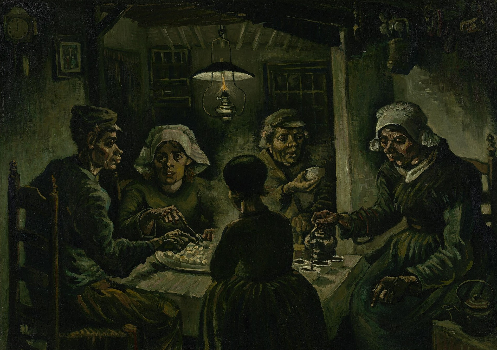

吃土豆的人 The Potato Eaters
梵高 · 1885年4–5月 · 阿姆斯特丹梵高博物馆
Vincent van Gogh · April–May 1885 · Van Gogh Museum, Amsterdam
图片：梵高博物馆，公有领域 / Image: Van Gogh Museum, public domain

发现 · Discover
唯一的灯 The only lamp
屋顶挂着的这盏油灯，是房间里唯一的光，照亮了每个人的脸和手。
This oil lamp is the only light in the room, picking out each face and hand.
这双手 These hands
梵高说，他想让人感觉到，这些人是用伸进盘子的这双手，亲自翻土种出了土豆。
Van Gogh said he wanted people to feel that these folk had tilled the earth with the very hands they put into the dish.
诚实挣来的食物 Honestly earned
他说这幅画讲的是体力劳动，讲的是他们诚实地挣来了自己的食物。
He said the painting speaks of manual labour, and of how they had honestly earned their food.
一百多张习作 Over a hundred studies
开始画之前，他画了一百多张农民的肖像习作，还有许多素描。
Before starting, he made over a hundred portrait studies of farmworkers, and many drawings.
不是肖像 Not portraits
他在农民德格罗特-范罗伊一家的家里画习作，但并不打算画出这家人准确的样子。
He made his studies at the home of the De Groot-van Rooij family, but did not intend to make exact portraits of them.
彼此孤立 Apart, together
画中的人是由几张单人习作组合起来的，所以虽然围坐在一起，看起来却有些彼此孤立。
The figures were combined from separate studies, so although they sit together, they seem somewhat isolated from one another.
故事 · The story
ACT I 第一幕 · 一场考试 A test of mastery
1883年底，梵高回到纽南父母家。为了这幅画，他画了一百多张农民的肖像习作。他把它当作对自己的一次考试，想证明自己正在成为一个真正的人物画家。
At the end of 1883, Van Gogh returned to his parents' home in Nuenen. For this painting he made over a hundred portrait studies of farmworkers. He saw it as a test of his mastery, proof that he was becoming an accomplished figure painter.
1885年4–5月 · 阿姆斯特丹梵高博物馆 / April–May 1885 · Van Gogh Museum, Amsterdam
ACT II 第二幕 · 灯下的晚餐 Supper under the lamp
1885年春天，他画下了这五个人，在唯一的一盏灯下吃土豆。他写信告诉提奥：他们用伸进盘子的这双手，亲自翻土种出了这些土豆。
In spring 1885, he painted these five people eating potatoes under a single lamp. He wrote to Theo that they had tilled the earth with the very hands they put into the dish.
1885年4–5月 · 阿姆斯特丹梵高博物馆 / April–May 1885 · Van Gogh Museum, Amsterdam
ACT III 第三幕 · 不急着被喜欢 In no hurry to be liked
画商和其他画家都不喜欢这幅画，但梵高自己很看重它。他说，他并不急着让每个人都马上喜欢它。
Dealers and fellow artists did not like the painting, but Van Gogh valued it highly. He said he was not at all anxious for everyone to like it at once.
1885年4–5月 · 阿姆斯特丹梵高博物馆 / April–May 1885 · Van Gogh Museum, Amsterdam
他们诚实地挣来了自己的食物。 They had honestly earned their food.
作品档案 · Artwork record
| 画家（生卒年） · Artist (dates) | 文森特·梵高（1853–1890） / Vincent van Gogh (1853–1890) |
|---|---|
| 画名 · Title | 吃土豆的人 / The Potato Eaters |
| 年份 · Date | 1885年4–5月，纽南 / April–May 1885, Nuenen |
| 材质 · Medium | 布面油画 / Oil on canvas |
| 尺寸 · Dimensions | 82 × 114 cm |
| 收藏地 · Collection | 阿姆斯特丹梵高博物馆 / Van Gogh Museum, Amsterdam |
关于画家 · About the artist
文森特·梵高（1853–1890），荷兰画家。他将近27岁才开始画画，短短十年留下了大量作品。1888年他来到法国南部的阿尔勒，在那里画出了许多最著名的画。
Vincent van Gogh (1853–1890) was a Dutch painter. He began painting at around 27 and left a huge body of work in just ten years. In 1888 he moved to Arles in the south of France, where he painted many of his best-known works.
更多梵高的画 · More by Vincent van Gogh